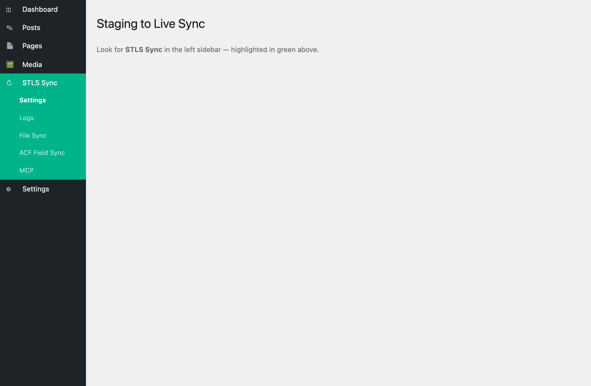
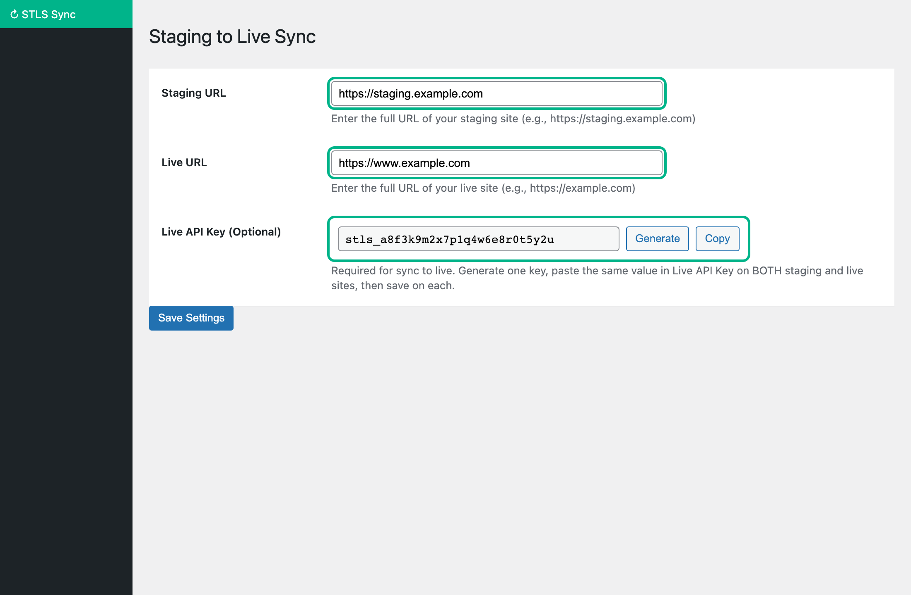
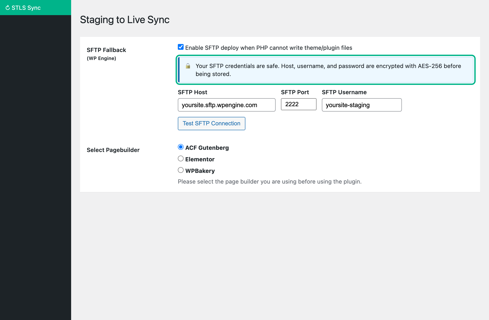
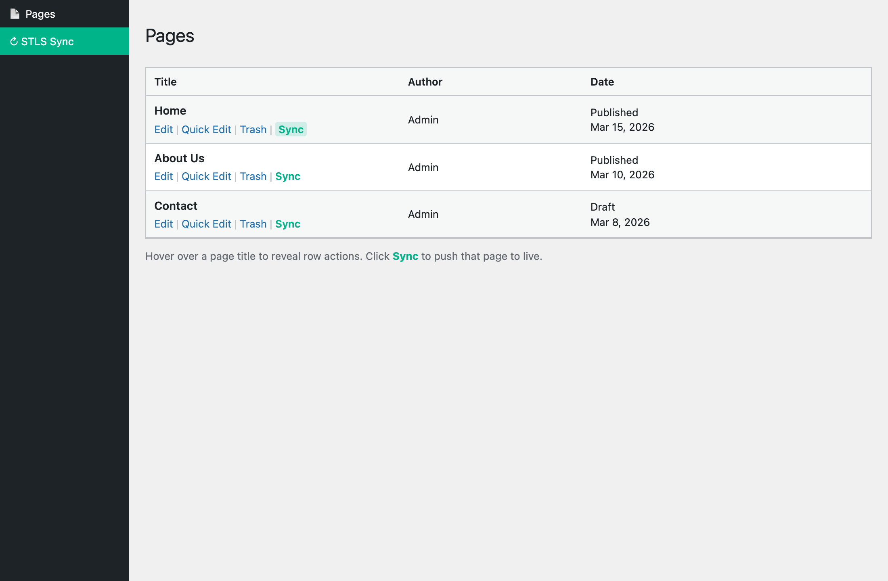
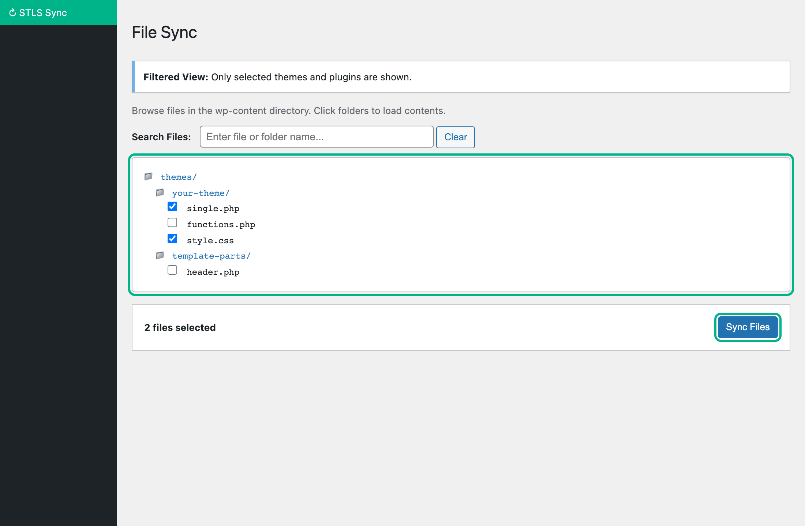
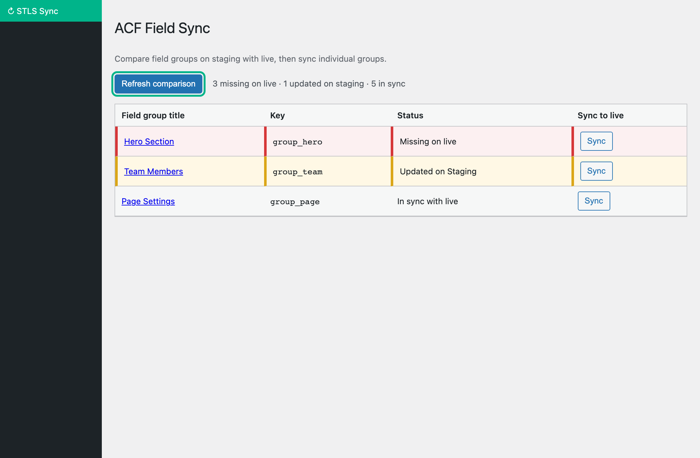
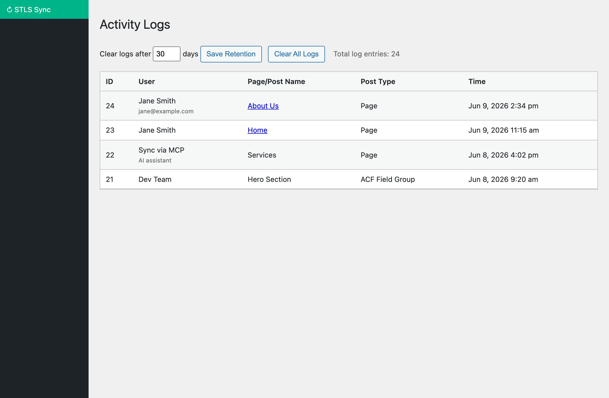
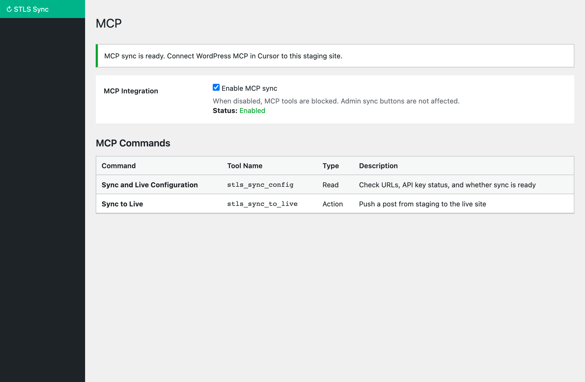

What is this plugin?
Staging to Live Sync (called STLS in your WordPress menu) helps you copy content from your staging site (where you make changes) to your live site (what your visitors see).
Think of it like copying a finished document from your draft folder to the published folder — except it happens with one click, and it also brings along images, custom fields, and page layout data.

Understanding your two websites
Most professional WordPress setups use two copies of the same website:
| Site | What it is | Who sees it |
|---|---|---|
| Staging site | A private copy where you draft, edit, and preview changes. Often has a different web address (e.g. staging.yoursite.com). | You and your team only |
| Live site | The real, public website. This is what appears in Google and what customers visit. | Everyone on the internet |
Important rules to remember
- Always edit on staging, then sync to live. Don't make content changes directly on the live site if you use this workflow.
- Sync only goes one direction — from staging to live. It does not pull changes back from live to staging.
- Both sites need the plugin installed. Your developer or host usually handles this during setup.
Before you start
Make sure these things are ready. If any are missing, ask your developer or site administrator.
- Log into your staging site — not the live site. Check the web address in your browser to confirm you're on staging.
- Confirm STLS Sync appears in the left WordPress menu. If you don't see it, the plugin may not be activated.
- Know both website addresses — your staging URL and your live URL (e.g. https://staging.example.com and https://www.example.com).
- Have your Live API Key ready — a password-like code that lets staging talk securely to live. Your developer may have set this up already.
- Save your work first — always click Update or Publish on your page before syncing, so the latest version is sent to live.
First-time setup
This is usually done once by you or your developer. Go to STLS Sync → Settings on both websites.
Step 1 — On your live website
- Log into WordPress on your live site.
- Click STLS Sync → Settings in the left menu.
- In Live URL, enter your live website address (the one visitors use).
- In Staging URL, enter your staging website address.
- Next to Live API Key, click Generate to create a secure key.
- Click Copy and save this key somewhere safe (a password manager or secure note).
- Under Page builder, select the tool you use to build pages (ACF Gutenberg, Elementor, or WPBakery).
- Click Save Settings at the bottom of the page.
Step 2 — On your staging website
- Log into WordPress on your staging site.
- Click STLS Sync → Settings.
- Enter the same Staging URL and Live URL as above.
- Paste the exact same Live API Key you copied from the live site. It must match character for character.
- Select the same Page builder option.
- If you plan to sync theme files, scroll down and check the themes/plugins you want to appear under File Sync.
- Click Save Settings.


Your daily workflow
Once setup is complete, this is the routine you'll follow every time you publish changes:
- Log into staging — open your staging website in the browser.
- Edit your page or post — make your text, image, and layout changes as usual.
- Save or update — click Update or Publish so your changes are saved on staging.
- Preview on staging — view the page on staging to make sure it looks correct.
- Sync to live — go to the Posts or Pages list and click Sync (see next section).
- Check the live site — open the same page on your live website and confirm it looks right.

Syncing a page or post
This is the most common task you'll perform. It copies one page (or post) from staging to live.
How to sync
- On staging, go to Pages → All Pages (or Posts, or your custom content type).
- Find the page you want to publish. Hover over its title.
- Click the green Sync link that appears below the title (next to Edit, Quick Edit, Trash).
- Wait a few seconds. You'll see a success or error message.
- Visit the live site and check the page.
What gets copied to live?
When you sync a page, STLS sends much more than just the text. Here's everything included:
| What | Plain English |
|---|---|
| Page title & content | The headline, body text, and excerpt |
| Page status | Whether it's published, draft, etc. |
| Featured image | The main image shown with the page |
| Images in the page | Photos and graphics inside your content — they're copied to the live media library |
| Custom fields (ACF) | Extra content areas your developer set up — hero text, icons, repeater lists, etc. |
| Page builder layout | Blocks, Elementor sections, or WPBakery content — depending on your setup |
| Categories & tags | Any labels assigned to the page |
| SEO settings | Yoast SEO title and description, if you use Yoast |
If the Sync button doesn't appear
- You might be on the live site instead of staging — check your browser URL.
- Settings may not be saved — go to STLS Sync → Settings and confirm URLs and API key are filled in.
- That content type might be disabled — check Settings → Disable Sync for Post Types.
Settings explained
All plugin settings are under STLS Sync → Settings. Here's what each option means in everyday language.
| Setting | What it does | Who fills it in |
|---|---|---|
| Staging URL | The full web address of your staging site (starts with https://). | You or your developer |
| Live URL | The full web address of your public live site. | You or your developer |
| Live API Key | The security password connecting both sites. Must be identical on staging and live. | Generate once, copy to both sites |
| Page builder | Tells the plugin how your pages are built — ACF Gutenberg (default), Elementor, or WPBakery. Pick the one your site uses. | You or your developer |
| Disable Sync for Post Types | Hides the Sync button for specific content types you don't want synced (e.g. internal notes). | Optional — you |
| File Sync: Themes & Plugins | Choose which theme and plugin folders appear on the File Sync page. | Developer usually |
| SFTP Fallback | For hosts like WP Engine that block direct file writes. Lets the plugin upload theme files another way. | Developer / host admin |
| Debugger emails | Developer |
Choosing your page builder
Your developer will tell you which page builder your site uses. Select the matching option:
- ACF Gutenberg — Default. Use this if you edit pages with the WordPress block editor and custom ACF blocks.
- Elementor — Use if you build pages with Elementor. Both sites must run the same Elementor version.
- WPBakery — Use if your site uses WPBakery Page Builder.
Syncing theme files
Sometimes your developer changes theme files (templates, styles, code) on staging and needs to copy those to live. This is different from syncing a page — it moves actual website files.
How file sync works (simple version)
- Your developer selects which theme/plugin folders to show — under STLS Sync → Settings.
- Go to STLS Sync → File Sync on staging.
- Click folders to expand them and browse files (like a file explorer).
- Check the boxes next to the files you want to copy to live.
- Click Sync Files and wait for the progress message.
WP Engine and managed hosting
Some web hosts (like WP Engine) don't allow files to be written directly into theme folders for security. STLS handles this automatically:
- The file is first saved to a temporary folder on live.
- Then it's uploaded to the correct location using SFTP (a secure file transfer method).

If files couldn't be uploaded automatically (common on WP Engine), you'll see a yellow notice in Settings with an Apply Queued Files via SFTP button. Click it to retry, or ask your developer for help.
Custom fields (ACF)
Many websites use a plugin called Advanced Custom Fields (ACF) to add extra content areas to pages — things like icon lists, hero banners, team member cards, or repeater sections. These are called field groups.
Why field groups matter
Before you sync pages that use custom fields, the field group definitions must exist on both staging and live. If live is missing a field group, the content may appear empty after sync.
How to sync field groups
- On staging, go to STLS Sync → ACF Field Sync.
- Click Refresh comparison. This checks what's on live vs staging.
- Look at the status column:
- Missing on live — the field group doesn't exist on live yet. Sync it.
- Out of date — live has an older version. Sync to update.
- In sync — everything matches. No action needed.
- Click Sync next to any field group that needs updating.
- After field groups are in sync, sync your pages as usual.

Activity logs
STLS keeps a record of every sync so you can see what was sent and when. Go to STLS Sync → Logs.
| Column | What it tells you |
|---|---|
| User | Who performed the sync (your name, or "Sync via MCP" if an AI tool did it) |
| Page/Post Name | Which page or item was synced — click to edit it |
| Post Type | Whether it was a Page, Post, File sync, or ACF Field Group |
| Time | When the sync happened |

Logs are automatically deleted after a set number of days (default: 30). You can change this at the top of the Logs page. Use Clear All Logs to remove the history manually.
AI sync (optional)
If your team uses AI tools like Cursor, developers can enable MCP sync. This is separate from the normal Sync button — you don't need it for everyday page publishing.
Screenshot — MCP page
Do's & don'ts
Do
- Edit and preview on staging first
- Save your page before syncing
- Check the live page after every sync
- Sync ACF field groups before syncing pages that use them
- Keep the same plugin version on both sites
- Ask your developer if you're unsure about file sync
Don't
- Edit content directly on the live site (if you use this workflow)
- Sync from the live site — it only works from staging
- Share your Live API Key publicly
- Sync files unless you know what they do
- Assume sync worked without checking live
- Skip saving — always Update/Publish before Sync
When something goes wrong
If sync fails, you'll usually see an error message on screen. Here's what common messages mean and what you can try.
| What you see | What it means | What to try |
|---|---|---|
| Sync button is missing | The plugin doesn't think you're on staging, or settings aren't complete. | Confirm you're logged into staging. Check Settings has both URLs and the API key filled in. |
| Invalid API key | The security key on staging doesn't match live. | On live, copy the Live API Key. Paste it into staging Settings. Save on both sites. |
| No route found | Live site may not have the plugin active or updated. | Ask your developer to confirm the plugin is active on live and both sites use the same version. |
| Images missing on live | Live couldn't download images from staging. | Make sure staging is accessible from the internet (not blocked by a login wall). Ask your developer. |
| Custom fields empty | Field groups may not exist on live yet. | Go to ACF Field Sync, refresh comparison, and sync the missing field groups first. |
| File sync failed | Live couldn't write the file directly (common on WP Engine). | Enable SFTP in Settings or click Apply Queued Files via SFTP. Contact your developer. |
Common questions
Does syncing delete anything on live?
Can I sync multiple pages at once?
Will my page look exactly the same on live?
Do I need to sync every time I make a small edit?
What if I accidentally sync the wrong page?
Is my Live API Key like a password?
What's MCP / AI sync?
Glossary
Quick definitions for terms you might see in this guide or in WordPress.
- Staging site
- A private copy of your website used for editing and testing before going live.
- Live site
- Your public website — the one visitors and search engines see.
- Sync
- Copying content from staging to live with one action.
- Live API Key
- A secret code that allows staging to send content to live securely. Must match on both sites.
- ACF (Advanced Custom Fields)
- A WordPress plugin that adds extra content fields to pages — like icons, banners, or structured data.
- Field group
- A collection of custom fields in ACF (e.g. "Hero Section" or "Team Members").
- Custom post type
- A special kind of content beyond regular pages and posts — like Events, Products, or Case Studies.
- Theme files
- The design and template files that control how your website looks and behaves.
- SFTP
- A secure way to upload files to a web server. Used when direct file writing isn't allowed.
- WP Engine
- A popular managed WordPress hosting company with extra security restrictions on file access.
- Page builder
- The tool used to design pages — ACF Gutenberg blocks, Elementor, or WPBakery.
When to ask for help
You can handle day-to-day page syncing yourself. Contact your developer or site administrator when:
- First-time setup hasn't been done yet
- You see error messages you don't understand (especially API key or "route not found" errors)
- You need to sync theme files or change SFTP settings
- Custom fields or images aren't appearing on live after sync
- The plugin needs to be installed, updated, or activated on either site
- You need bulk syncing or AI/MCP integration set up